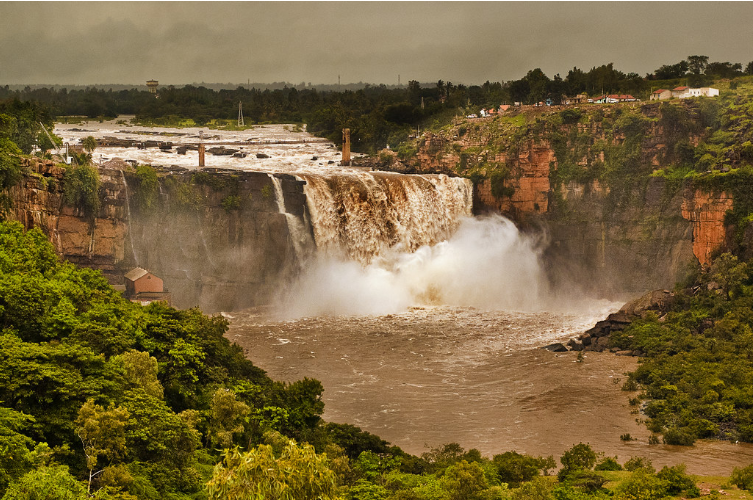
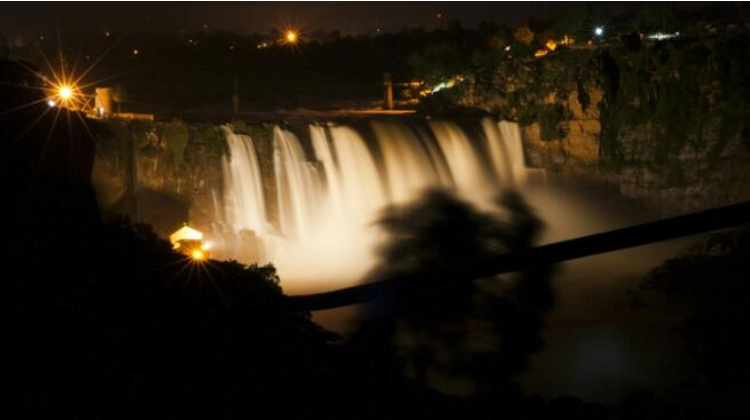

Gokak Falls is 6 km away from Gokak town and gets its name from the Goki trees found in abundance in these areas. It resembles the Niagara Falls due to its features like the fall, shape etc. Here, River Ghataprabha takes a leap of 52 metres over the sand-stone cliff amidst a picturesque gorge of the rugged valley, making a beautiful sight. This place has the credit of generating electricity for the first time in the country in about 1887. A prime attraction of the Gokak Falls is the hanging 200-m-long bridge that lies 14 m above the bedrock. Tourists can also visit monuments on both sides of the rocky gorge which include temples of Goddess Durga, Lord Shanmukha and Lord Mahalingeshwara built in the traditional Chalukyan style of architecture.

History
Gokak is a place of philosophical and historical significance. According to Hindu Purans, Gokak was a part of Kuntal Country; it was the land of hunting tribes. During historical period many emperors had ruled the Gokak areas: Shatavahanas ruled it during 327 BC to 229 CE, the Western Chalukyas ruled it during 550 CE to610 CE, then it was also ruled by Rastrakootas and Kalyana Chalukyas; the subordinate-kings of Rastrakootas called Ratts too ruled Gokak Province during 850 CE to1250 CE under Rastrakoots as well Kalyana Chalukyas, during this reign temples and Basadies were built at Konnur, Gokak-Falls, Gokak and Mamadapur. Devagiri Yadavas captured this areas after defeating Ratts but the Sultanas of Delhi took this areas under their control by defeating Yadavas.
Gokak taluka contributed to the Prime Minister's Relief Fund which was meant for humanitarian assistance for the Indian Ocean tsunami victims. Child Development Project Officer Mr P N Patil who addressed a press conference had disclosed that it was decided to donate a day's salary of government officials towards the relief fund. The employees of Forbes-Gokak textile industry also contributed about INR ₹ 7 lakh (₹ 700,000). Gokak is also known for its old Hindu Temples. Gokak is also renowned for its sweets, which are known all over India, such as Karadantu (a Kannada term, which literally means fried edible gum), a sweet richly stuffed with nuts and edible gum, and ladagi laadu..

Significance
Hanging Bridge: Built across the river, 200 meters long, gives an elevated view of the falls.
Lord Mahalingeshwara Temple, built-in Chalukya style architecture.
Kemple Park botanical gardens
Yogi Kolla hiking: A popular trekking destination 3 kms from the falls.
Mallaprabha Boating: Boating options in Markandeya river, 8 kms from the Falls
More temples: such as Yogikolla Mallikarjuna Temple, Kariyamma Temple, Laxmi Temple, Hanuman Temple and more.
How To Reach
The Falls is 622 kms from Bengaluru and 62 kms from Belagavi. Belagavi is the nearest airport and major railway station. Belagavi is well-connected by air, rail and road to rest of Karnataka. From Belagavi taxi can be hired to reach Gokak falls.